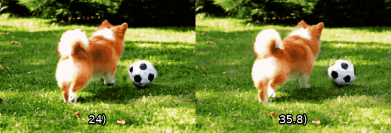
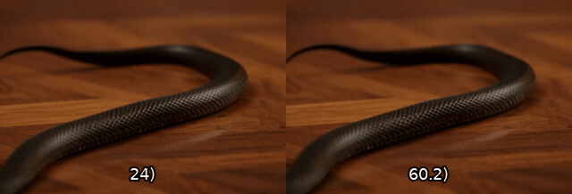
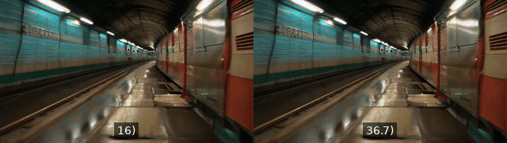
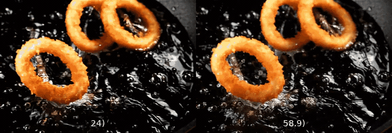
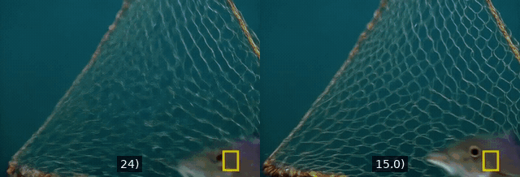
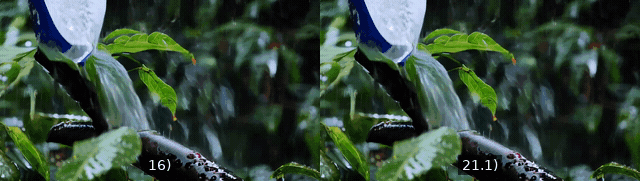

The Pulse of Motion: Measuring Physical Frame Rate from Visual Dynamics
Modern video generators produce stunning visuals — but they lack a reliable internal clock. A hummingbird might flap its wings in extreme slow motion; a person falling onto a bed might defy gravity. This happens because models train indiscriminately on videos with vastly different real-world speeds, all forced into standardized frame rates.
We call this Chronometric Hallucination: generated motions exhibit ambiguous, unstable, and uncontrollable physical time scales.
Visual Chronometer recovers the true Physical FPS (PhyFPS) from visual motion alone — the frame rate that makes motion look natural. By measuring and correcting PhyFPS, we significantly improve the perceived naturalness of AI-generated videos, validated through user studies.
Side-by-side comparisons of original AI-generated videos (left) and PhyFPS-corrected versions (right). In all cases, users overwhelmingly preferred the corrected version.
"A brown hen scratching the dirt and pecking at the ground to hunt for worms."

"A frog leaping to snap up an ant."

"A panning shot following a yellow taxi driving down the street."
"Thick fog rolling over a mountain range like ocean waves."

"A girl pushing her friend across the room on a rolling office chair."
"Children playing together at an indoor playground."
"A worker spraying a misty disinfectant across an office space."

"A flock of sheep running across a grassy field."
"A Pomeranian dog chasing a soccer ball across a lawn."

"Firecrackers bursting and sparking in the sky."

State-of-the-art video generators exhibit large gaps between their nominal frame rate and the physical motion speed of their outputs.
Generated videos show inconsistent physical speed both across different prompts (inter-video) and within the same video (intra-video).
Re-timing generated videos to their predicted PhyFPS significantly improves human-perceived naturalness, as validated by our user study.
General-purpose Vision-Language Models are unreliable PhyFPS judges, underscoring the need for our dedicated predictor.
@article{gao2026visual_chronometer,
title={The Pulse of Motion: Measuring Physical Frame Rate from Visual Dynamics},
author={Gao, Xiangbo and Wu, Mingyang and Yang, Siyuan and Yu, Jiongze
and Taghavi, Pardis and Lin, Fangzhou and Tu, Zhengzhong},
year={2026}
}